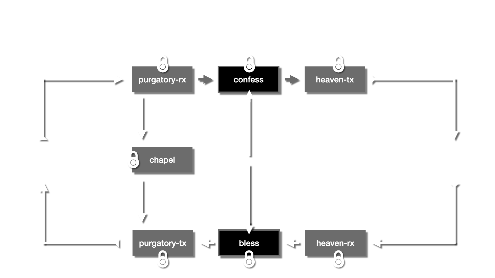
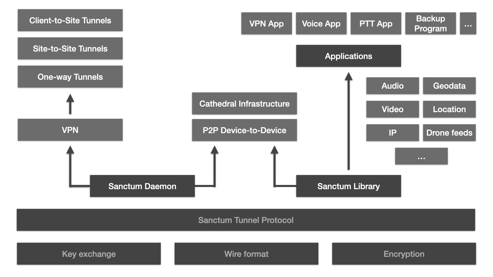

Introduction
Sanctum is a PQ-secure and fully privilege separated VPN daemon and protocol that runs under Linux, OpenBSD and MacOS. It is designed from the ground up with security in mind and will always be open and free, released under the ISC license.
Zero security vulnerabilities in 4 years.
Developed in Europe
A European alternative to Tailscale or ZeroTier
Sanctum is often used to create more secure replacements for things like Tailscale or ZeroTier, and by organizations whose communication must remain secret, even in the future.
Sanctum - Set up your own cathedral → Tier6 - Build a global ethernet network →
Join The Reliquary community-driven cathedral network if you don't want to setup your own.
| Sanctum | Tailscale | ZeroTier | |
|---|---|---|---|
| License | ISC | Mixed | Source-available |
| Post-quantum secure | Yes Hybrid x25519 + ML-KEM-1024 + shared secret. | No WireGuard, x25519 only. | No x25519 only. |
| Multi-process | Yes Several sandboxed processes working together. | No One process without proper sandboxing. | No One process without proper sandboxing. |
| Who runs coordination | You or Community Your own cathedral, or The Reliquary. | Vendor Closed-source control plane (Headscale is a third-party alternative). | Vendor Hosted controller and roots, self-hosting possible. |
| One-way tunnels for diodes | Yes | No | No |
| Traffic analysis protection | Yes | No | No |
| OSI Layer | L2 and L3 | L3 | L2 |
| Multicast | Just works | - | Limited |
| Platforms | OpenBSD, Linux and macOS. | Windows, macOS, Linux, iOS, Android and more. | Windows, macOS, Linux, iOS, Android and more. |
Overview
Security as a core concept
Sanctum is designed from the ground up with security in mind. From strong cryptography and sandboxing all the way down to its multi-process architecture.
-
Resilient
Your devices connected, no matter where they are. Always P2P and E2EE. Built to be resilient and work in any scenario, sanctum supports different topologies, including one-way tunnels.
-
PQ-secure
Sanctum is post-quantum secure, its unique key exchange is based on a shared symmetrical secret in combination with a hybridized asymmetrical exchange (classical ECDH + ML-KEM-1024).
-
Privilege separated
Sanctum is the only free and open VPN software in the world designed from the ground up in a fully privilege separated way. Its multi-process is unique and allows for fine-grained sandboxing.
Hybrid, PQ-secure key exchange
Sanctum is post-quantum secure due to its unique approach to deriving session keys based on a shared symmetrical secret in combination with a hybridized asymmetrical exchange. The asymmetrical exchange combines both classic ECDH (x25519) and the PQ-secure NIST standardized ML-KEM-1024. All three secrets are used to derive strong session keys.

Multi-process privilege separation
Sanctum is built using a multi-process approach where each process is only doing one thing. This allows for more fine-grained sandboxing in relation to permissions or allowed system calls. Packets flow between these processes in a well-defined manner making it impossible to move a packet straight from the red side to the black side without passing the encryption process and vice-versa.

Topologies
Topologies
Sanctum, out of the box, supports different modes that can be used to build all sorts of topologies.
| Tunnel mode | Classic site-to-site, or roadwarrior setup. |
|---|---|
| Pilgrim-shrine mode | One-way tunnels, in case of diodes. |
| Liturgy mode | Auto discovery of peers and tunnel management. |
| Cathedral mode | Relay, discovery and key distribution. |
A whole ecosystem
The ecosystem
Sanctum is the name for the VPN daemon and protocol but part of its ecosystem is the library implementation, allowing one to embed sanctum tunnels straight into applications.
Embed sanctum into your apps
The library implementation of sanctum is called libkyrka. Using this library you can easily embed your own sanctum tunnels direct into your own applications. The library supports cathedrals and runs on all types of different hardware platforms and can for example be used to serve video feeds from drones to an operator or to create integrated voice comms in a resilient way.

Talks
Found a security issue?
Send an email to priests@sanctorum.se and we will work with you.